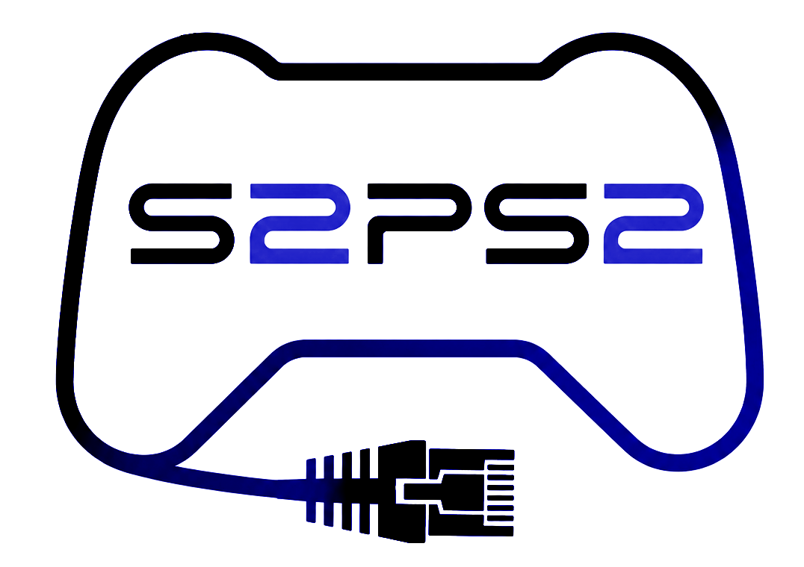
SMB / UDPBD / UDPFS supportexFATMicroSD / USB / SSD / HDD20mA idle)| Device | PS2 model | Speed |
|---|---|---|
| USB | FAT + SLIM 70000 | |
| USB | SLIM | |
| MX4SIO | SLIM | |
| MMCE | SLIM | |
| MX4SIO | FAT + SLIM 70000 | |
| MMCE | FAT + SLIM 70000 | |
| SMB ⭐ | ALL | |
| DVD (Target) ✔️ | ALL | |
| UDPFS ⭐ | ALL | |
| UDPBD ⭐ | ALL | |
| IDE HDD | FAT |
| Device | Support | SD | USB | Photo |
|---|---|---|---|---|
| Luckfox Pico Mini B | ✅¹ | ✅ | ✅² | 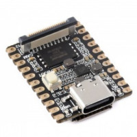 |
| Luckfox Pico Mini A | ❓¹ | ❌ | ✅² | 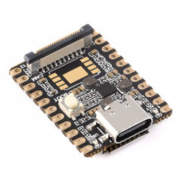 |
| Luckfox Pico | ❓¹ | ❌ | ✅² | 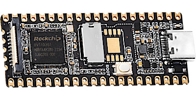 |
| Luckfox Pico Plus | ✅ | ✅ | ✅² | 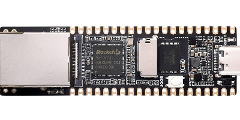 |
| Luckfox Pico WebBee | ✅ | ✅ | ❌ | 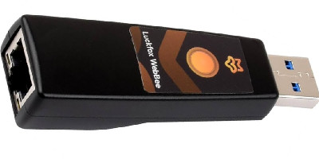 |
| rv1103 based P4 PPPwn Dongles | ✅ | ❌ | ✅² | 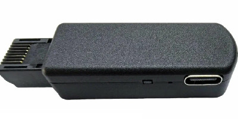 |
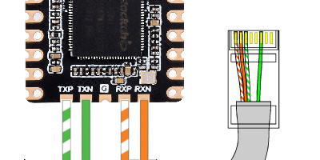
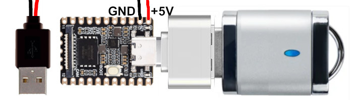
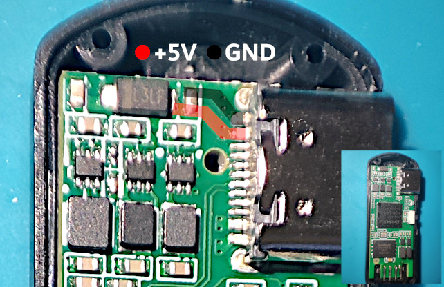
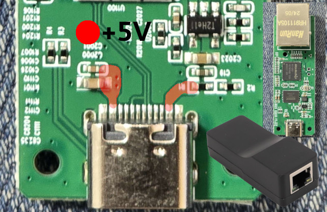
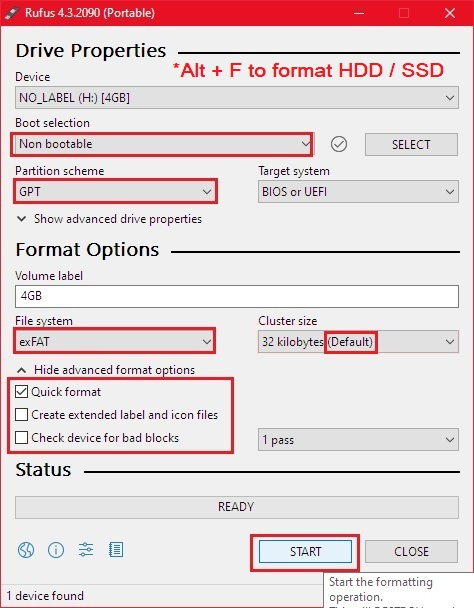
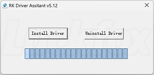
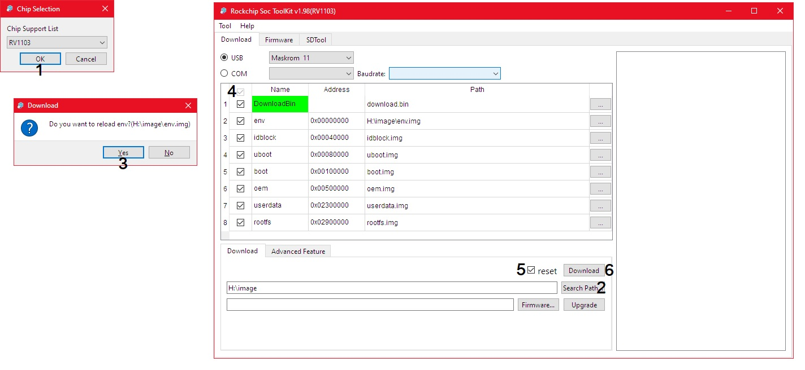
On the Luckfox Pico (depending on the model) there are 2 LEDs: ACT and USER
Blinking of USER LED = server has started, number of blinks indicates server type.
(Default is SMB SD)
| LED | Action | Server Type |
|---|---|---|
| 1 Blink | 🔴 | SMB SD |
| 2 Blinks | 🔴🔴 | SMB USB |
| 3 Blinks | 🔴🔴🔴 | UDPBD SD |
| 4 Blinks | 🔴🔴🔴🔴 | UDPBD USB |
| 5 Blinks | 🔴🔴🔴🔴🔴 | UDPFS SD |
| 6 Blinks | 🔴🔴🔴🔴🔴🔴 | UDPFS USB |
After starting, you can cycle through the modes by pressing the BOOT button

| IP | 192.168.1.10 |
| NetMask | 255.255.255.0 |
| Gateway | 192.168.1.1 |
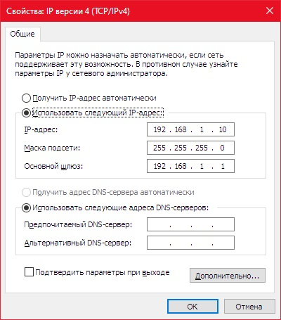
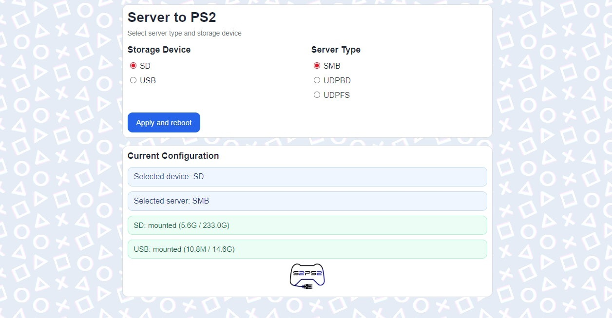
Check that drives are detected by server, then select the server mode.
Depending on chosen method place FMCBinst(****) folder into root FAT32 USB Drive, insert into PS2
Run uLaunchELF
Run mass:/FMCBinst(****)/FMCBInstaller.elf
Make sure that the correct MC is inserted into PS2 slot 1, slot 2 is empty
Restore MC ( Press R1 R1 Down Down X ), Confirm
(careful, it will format your MemoryCard)
Install FMCB Multi-install ( Press L1 L1 Down X ), Confirm
Exit, Reboot PS2, Eject USB from PS2
This will install the latest FMCB and OPENTUNA on one card.
This combination of Apps should work on most (if not all) Slim PS2
Config in OPL as a reference:
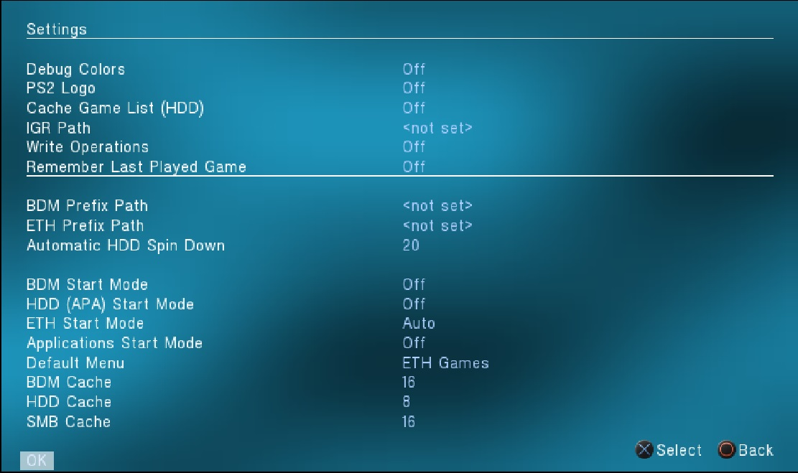
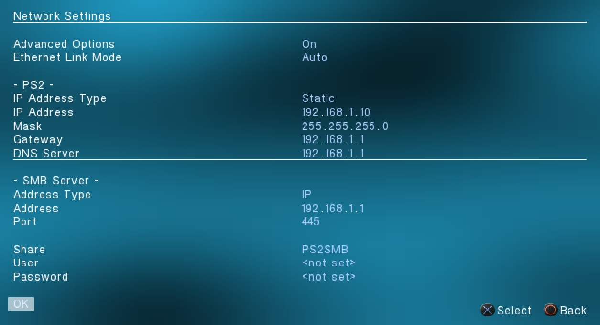
At the moment, the main OPL does not support UDPBD. A special version of OPL is required.
-Delete/archive opl .cfg files, there are stored in:
mc0:/OPL/conf_network.cfg
mc0:/OPL/conf_opl.cfg
-Remove any USB Drive from PS2 (important!)
-At the moment OPL is launched, the router must already be connected and running.
-Run OPNPS2LD..UDPBD.elf from MC
Settings->BDM Start Mode->Auto
Settings->Default Menu->BDM Games->OK->Save Changes
At the moment, the only NHDDL support UDPFS. Setup instructions are available on the project page.
SSH / SCP: IP 192.168.1.1 Login root Pass: luckfox
Internal install (Soldering points for PS2 90000 as an example)
4 33nf ceramic capacitors are required.
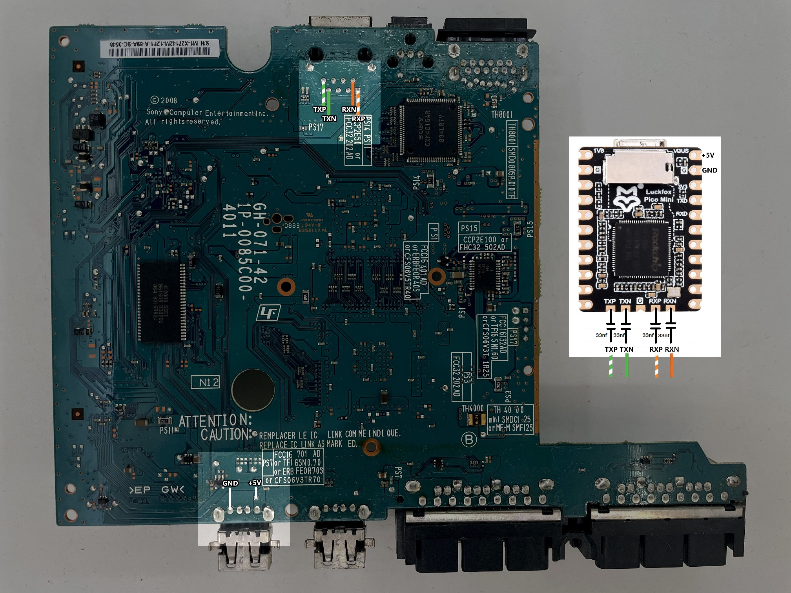
Rickgaiser , pcm720, AlSiSan , Belin02 and whole PS2 Community